When you upload an .intunewin file through the Intune portal, and manually fill in a bunch of fields, the portal runs a sequence of Microsoft Graph calls and a direct upload to Azure Storage on your behalf. If you replicate that sequence in PowerShell you can create Win32 apps from a pipeline, a packaging factory, or your own template library without ever touching the UI.
If you’ve read my blogs before, you’ll know that I love this stuff. Automation, PowerShell, and APIs, and wiring them together. My current role has pulled me deep into the world of app automation, which suits me perfectly, and it is the kind of work that genuinely gets me going. Writing these posts is how I make sense of it, and my aim is always the same…to demystify. To take something that looks complicated and lay it out plainly so anyone reading can follow along.
That being said, this post covers every step of that flow against the Graph beta endpoint…what each call does, what it returns, and why it exists. Each step has a code snippet, and the full working script is at the end. The worked example throughout is a real, testable deployment of Notepad++ 8.9.7 (64-bit), so you can run the whole thing end to end and see the app appear in Intune.
Before We Begin
Creating a Win32 app is a sequence of calls. What you are really building is a small scaffold. The app at the top, a content version beneath it, a file entry beneath that, and the file’s actual blobby-bytes (not an official term) sitting over in Azure Storage. Content is versioned so Intune can stage a new upload while the current one keeps serving devices, and the very last call simply points the app at the version you just finished. The file also moves through a set of states as it goes, which you poll between steps…there is a reference table of those states near the end of the post.
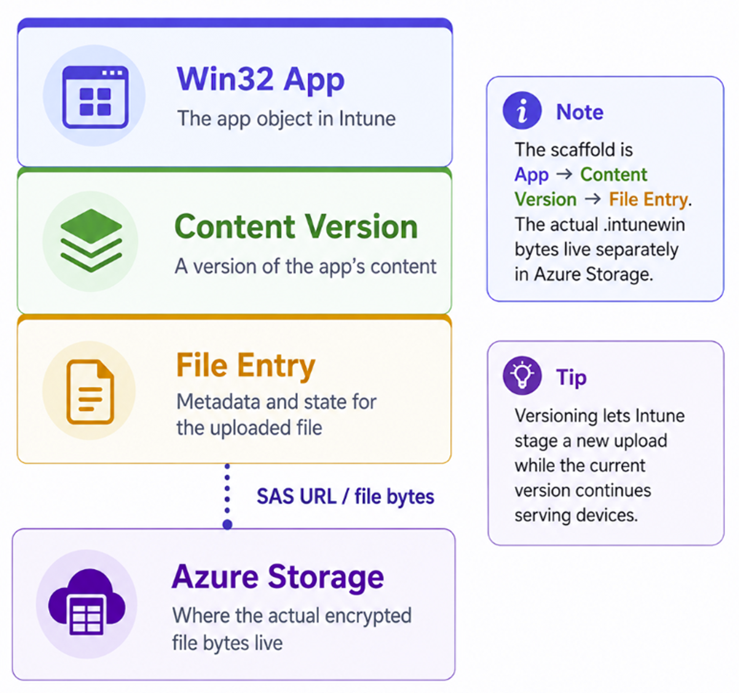
You build the .intunewin first with the Win32 Content Prep Tool (typically) and read its metadata. From there, the sequence of calls is:
- Create the app record (
win32LobApp), the app framework with no content yet. - Create a content version under that app.
- Create a file entry (
mobileAppContentFile) that declares the sizes, then poll until the Azure Storage SAS URL is ready. - Upload the encrypted content to Azure Blob Storage in blocks.
- Commit the file, passing Intune the encryption keys so it can decrypt and validate, then poll until the commit succeeds.
- Patch the app so it points at the committed content version.
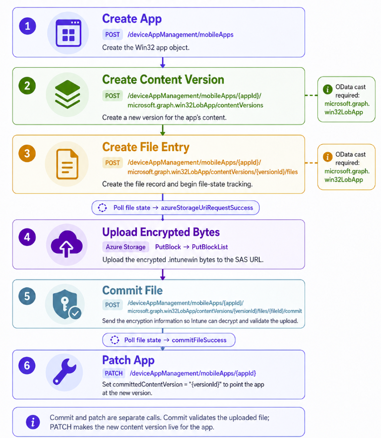
Every step is a Graph call except the upload, which goes straight to Azure Blob Storage using the SAS URI that Graph returns. That SAS URI is a short-lived, pre-authorised upload token. This separation matters, because the upload behaves differently from the rest of the flow and is where most failures happen. Yup, sending data over the internet still has us humans struggling in 2026.
Prerequisites
App Registration
You need an Entra ID app registration with the DeviceManagementApps.ReadWrite.All application permission (admin-consented), plus the tenant ID, client ID, and a client secret (or certificate). App-only authentication suits automation.
Modules
PowerShell modules, so what gives? Microsoft.Graph.Authentication handles the Graph calls and gives you Invoke-MgGraphRequest, the command every step in this post relies on. Az.Storage supplies the Microsoft.Azure.Storage.* blob types used for the upload. I have tried several different approaches to the file upload and this module has always given me the most reliable results.
foreach ($module in @('Microsoft.Graph.Authentication', 'Az.Storage')) {
if (-not (Get-Module -ListAvailable -Name $module)) {
Install-Module $module -Force -Scope CurrentUser
}
Import-Module $module -Force
}PowerShell Version
Run the packaging script on PowerShell 7 (this is 2026 right). It also runs on Windows PowerShell 5.1 if you have .NET Framework 4.7.2 or later. Keep one thing separate, though…the detection and requirement scripts you embed in the app. They run on each device under the Intune Management Extension, which uses Windows PowerShell 5.1 rather than 7. Write those to be 5.1-compatible even if you author the packaging script in 7.
Everything starts with an .intunewin, and to build one you need two downloads…Microsoft’s Win32 Content Prep Tool and the installer you want to package. The tool takes a content folder and a setup file. It packages everything in the content folder, recursively, into the encrypted .intunewin container, and the setup file simply names the primary installer inside it.
Tip: Keep the content folder clean of junk, because whatever sits in it ships
Where to keep the build files
Where you build matters. For a one-off, a scratch folder under %TEMP% is fine, and that is what this guide uses so each run starts clean and leaves nothing behind. But if you package apps regularly, it pays to keep a persistent, versioned library instead, so you can re-reference a source installer, re-upload after a failure, diff one release against the next, or prove months later exactly what you shipped.
Note: Once an app is uploaded, retrieving the original .intunewin back out of Intune is possible but not simple
A layout like this keeps the shared tooling in one place and gives every app version its own folder:
$installerUrl = "https://github.com/notepad-plus-plus/notepad-plus-plus/releases/download/v8.9.7/npp.8.9.7.Installer.x64.exe"
$installerFileName = Split-Path $installerUrl -Leaf
$contentPrepUrl = "https://github.com/microsoft/Microsoft-Win32-Content-Prep-Tool/raw/master/IntuneWinAppUtil.exe"
$root = Join-Path $env:TEMP "Win32App_NotepadPlusPlus"
$contentFolder = Join-Path $root "Content"
$outputFolder = Join-Path $root "Output"
$toolFolder = Join-Path $root "Tool"
if (Test-Path $root) {
Get-ChildItem $root -Force | Remove-Item -Recurse -Force -ErrorAction SilentlyContinue
}
foreach ($folder in @($root, $contentFolder, $outputFolder, $toolFolder)) {
New-Item -ItemType Directory -Path $folder -Force | Out-Null
}
$toolPath = Join-Path $toolFolder "IntuneWinAppUtil.exe"
$installerPath = Join-Path $contentFolder $installerFileName
Invoke-WebRequest -Uri $contentPrepUrl -OutFile $toolPath -UseBasicParsing
Invoke-WebRequest -Uri $installerUrl -OutFile $installerPath -UseBasicParsingThe resultant file/folder layout should resemble this:
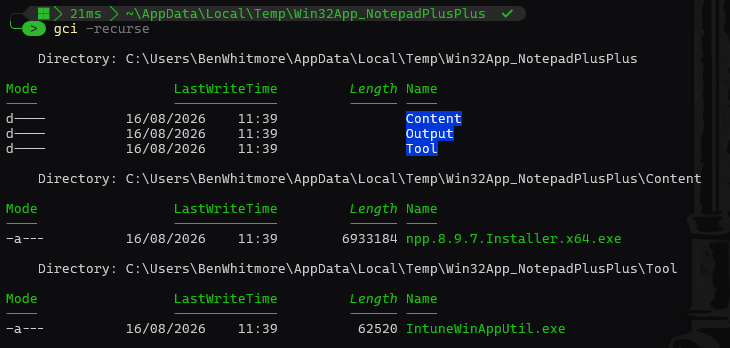
Now run the tool. -s is the setup file, -c the content folder, -o the output folder, and -q runs it quietly. It writes one .intunewin into the output folder.
$arguments = @('-s', "`"$installerPath`"", '-c', "`"$contentFolder`"", '-o', "`"$outputFolder`"", '-q')
$process = Start-Process -FilePath $toolPath -ArgumentList $arguments -Wait -PassThru
if ($process.ExitCode -ne 0) {
throw "IntuneWinAppUtil.exe exited with code $($process.ExitCode)"
}
$intuneWinFile = Get-ChildItem $outputFolder -Filter *.intunewin | Select-Object -First 1
$intuneWinPath = $intuneWinFile.FullNameWe now have a intunewin file.
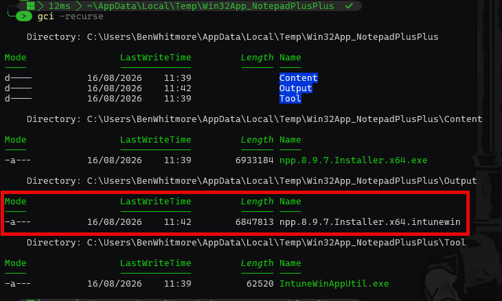
Calling out the not-so obvious, but the .intunewin is just a ZIP file. Inside it, IntuneWinPackage\Metadata\Detection.xml holds the encryption info and the unencrypted content size, and IntuneWinPackage\Contents holds the encrypted payload you will upload. Extract it to pull out the 3 things Graph needs later.
Add-Type -AssemblyName System.IO.Compression.FileSystem
$extractPath = Join-Path $root "Extract"
if (Test-Path $extractPath) { Remove-Item $extractPath -Recurse -Force }
New-Item -ItemType Directory -Path $extractPath -Force | Out-Null
[System.IO.Compression.ZipFile]::ExtractToDirectory($intuneWinPath, $extractPath)
$metaXml = [xml](Get-Content (Join-Path $extractPath "IntuneWinPackage\Metadata\Detection.xml"))
$encryptedFilePath = Get-ChildItem (Join-Path $extractPath "IntuneWinPackage\Contents") | Select-Object -First 1 -ExpandProperty FullName
$sizeEncrypted = (Get-Item $encryptedFilePath).Length
$sizeUnencrypted = [int64]$metaXml.ApplicationInfo.UnencryptedContentSize
$encryptionInfo = @{
encryptionKey = $metaXml.ApplicationInfo.EncryptionInfo.EncryptionKey
macKey = $metaXml.ApplicationInfo.EncryptionInfo.MacKey
initializationVector = $metaXml.ApplicationInfo.EncryptionInfo.InitializationVector
mac = $metaXml.ApplicationInfo.EncryptionInfo.Mac
profileIdentifier = "ProfileVersion1"
fileDigest = $metaXml.ApplicationInfo.EncryptionInfo.FileDigest
fileDigestAlgorithm = $metaXml.ApplicationInfo.EncryptionInfo.FileDigestAlgorithm
}Out of curiosity, lets see what we recorded. Just run $encryptionInfo in the same PowerShell session:
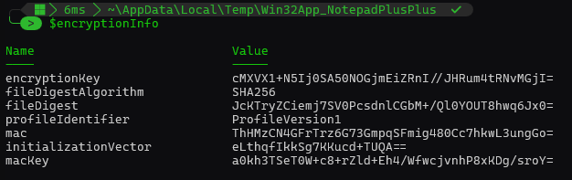
The $encryptionInfo block is not sent yet. It goes up at commit time later.
Step 3: Connect to Microsoft Graph and create the app
Authenticate app-only with your registration’s secret (or adapt this part to use a certificate), then create the win32LobApp.
This call builds the app framework, which includes everything the portal shows, plus the install and uninstall commands, the x64 requirement, and the detection rule. The response returns the app id, which every later call uses.
$tenantId = "<your-tenant-id>" $clientId = "<your-app-id>" $clientSecret = "<your-app-secret>" $secureSecret = ConvertTo-SecureString $clientSecret -AsPlainText -Force $credential = New-Object System.Management.Automation.PSCredential($clientId, $secureSecret) Connect-MgGraph -TenantId $tenantId -ClientSecretCredential $credential -NoWelcome
Two reminders before we look at the actual app body. First, the app registration must hold the DeviceManagementApps.ReadWrite.All application permission with admin consent granted, or every call in this guide returns 403. Second, on the credential itself. I HATE SECRETS, but for simplicity I am using one here. For local automation I prefer a certificate. Register one against the app registration, then swap the 3 secret lines above for a single thumbprint.
Tip: When leveraging the Microsoft Graph SDK for authentication, simply omit the -clientSecret parameter and replace it with -clientCertificate parameter to use a certificate for authentication instead. Example:Connect-MgGraph -TenantId $tenantId -ClientId $clientId -CertificateThumbprint $thumbprint -NoWelcome
You can run Get-MgContext to check you are authenticated with the correct Scope(s), specifically DeviceManagementApps.ReadWrite.All.
Now we are authenticated, lets create the next part of the scaffold. The Win32app container.
Before creating the app, save the application icon locally as a PNG file. For Notepad++, you can download the logo from the vendor’s website or another trusted source and convert it to PNG if the source image is SVG. The icon is then read as bytes and Base64-encoded directly into the largeIcon property of the app body. Microsoft Graph represents the icon as mimeContent, where type identifies the MIME type and value contains the image data.
$appBody = [ordered]@{
"@odata.type" = "#microsoft.graph.win32LobApp"
displayName = "Notepad++"
description = "Notepad++ is a free source code editor and Notepad replacement."
publisher = "Notepad++ Team"
displayVersion = "8.9.7"
informationUrl = "https://notepad-plus-plus.org/downloads/v8.9.7/"
largeIcon = @{
"@odata.type" = "#microsoft.graph.mimeContent"
type = "image/png"
value = [Convert]::ToBase64String(
[IO.File]::ReadAllBytes("$root\icon.png")
)
}
fileName = $intuneWinFile.Name
setupFilePath = $installerFileName
installCommandLine = "$installerFileName /S"
uninstallCommandLine = '"%ProgramFiles%\Notepad++\uninstall.exe" /S'
allowedArchitectures = "x64"
minimumSupportedOperatingSystem = @{ v10_1607 = $true }
installExperience = @{
"@odata.type" = "#microsoft.graph.win32LobAppInstallExperience"
runAsAccount = "system"
deviceRestartBehavior = "suppress"
}
returnCodes = @(
@{ returnCode = 0; type = "success" }
@{ returnCode = 3010; type = "softReboot" }
@{ returnCode = 1641; type = "hardReboot" }
@{ returnCode = 1618; type = "retry" }
)
rules = @(
@{
"@odata.type" = "#microsoft.graph.win32LobAppRegistryRule"
ruleType = "detection"
keyPath = "HKEY_LOCAL_MACHINE\SOFTWARE\Microsoft\Windows\CurrentVersion\Uninstall\Notepad++"
valueName = "DisplayVersion"
operationType = "version"
operator = "greaterThanOrEqual"
comparisonValue = "8.9.7.0"
check32BitOn64System = $false
}
)
} | ConvertTo-Json -Depth 10 -Compress
$app = Invoke-MgGraphRequest `
-Method POST `
-Uri "https://graph.microsoft.com/beta/deviceAppManagement/mobileApps" `
-Body $appBody `
-ContentType "application/json"
$appId = $app.idWe create a $appId variable so we can assign content to the Win32app framework we just established. The app exists in the Intune admin center, go take a peek, but there is no content yet.
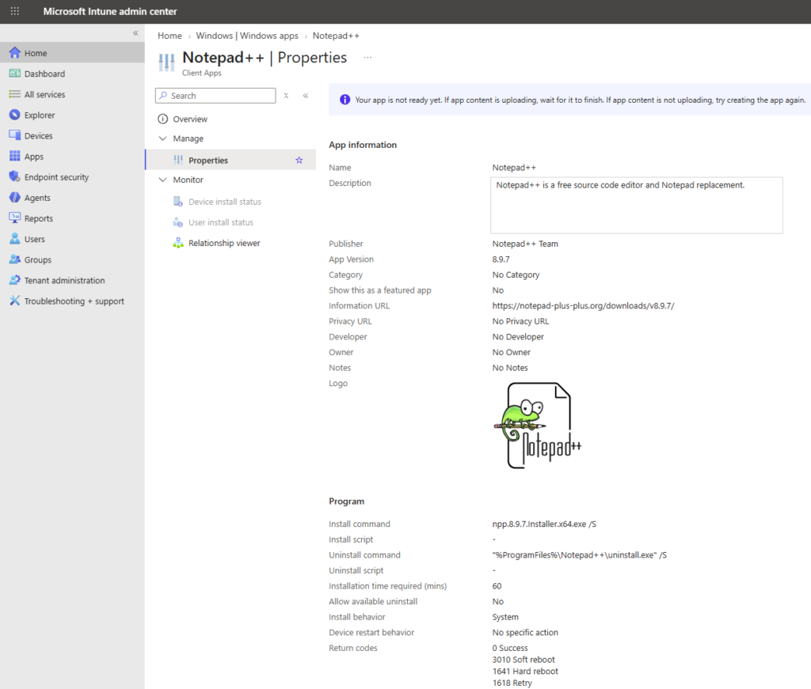
Step 4: Create the content version and file entry
Content is versioned, so first create a content version, then declare the file that goes into it. The file entry is metadata only at this point…essentialy just it’s name and the 2 sizes from step 2.
$contentVersion = Invoke-MgGraphRequest -Method POST -Uri "https://graph.microsoft.com/beta/deviceAppManagement/mobileApps/$appId/microsoft.graph.win32LobApp/contentVersions" -Body "{}" -ContentType "application/json"
$contentVersionId = $contentVersion.id
$fileBody = [ordered]@{
"@odata.type" = "#microsoft.graph.mobileAppContentFile"
name = $metaXml.ApplicationInfo.FileName
size = $sizeUnencrypted
sizeEncrypted = $sizeEncrypted
isDependency = $false
manifest = $null
} | ConvertTo-Json -Compress
$fileEntry = Invoke-MgGraphRequest -Method POST -Uri "https://graph.microsoft.com/beta/deviceAppManagement/mobileApps/$appId/microsoft.graph.win32LobApp/contentVersions/$contentVersionId/files" -Body $fileBody -ContentType "application/json"
$fileId = $fileEntry.id
$fileUri = "https://graph.microsoft.com/beta/deviceAppManagement/mobileApps/$appId/microsoft.graph.win32LobApp/contentVersions/$contentVersionId/files/$fileId"So we have a file URI. Note the content version in the URI is 1. Your URI will be different to the one below, for obvious reasons.
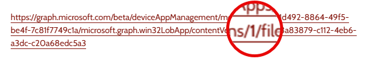
Step 5: Get and wait for the Azure upload URL
Creating the file entry does not immediately give us somewhere to upload the .intunewin file. Intune first provisions an Azure Blob Storage location for the file and generates a temporary Azure Storage URI for it.
While that happens, the file object’s uploadState remains pending, so we have to poll the file entry every few seconds until it reports azureStorageUriRequestSuccess. At that point, azureStorageUri contains the temporary SAS URL that we will use in the next step to upload the encrypted application content directly to Azure Blob Storage rather than through Microsoft Graph.
do {
Start-Sleep -Seconds 3
$fileStatus = Invoke-MgGraphRequest -Method GET -Uri $fileUri
} until ($fileStatus.uploadState -eq 'azureStorageUriRequestSuccess')
$azureStorageUri = $fileStatus.azureStorageUri
$sasExpiry = ([datetime]$fileStatus.azureStorageUriExpirationDateTime).ToUniversalTime()We also capture azureStorageUriExpirationDateTime because the SAS URL is time-limited and must be used before it expires. The expiry time returned by Intune tells us exactly how long the URL remains valid. You’ll typically find this is ~15 minutes in practice.
Step 6: Upload the encrypted content to Azure Blob Storage
With the SAS URL in hand, we upload the encrypted payload straight to Azure Blob Storage rather than through Graph. Larger files go up in blocks…read the file in 4 MB chunks, PutBlock each one with a unique block id, then assemble them with PutBlockList.
function New-IntuneBlobClient {
param([Parameter(Mandatory)][string]$AzureStorageUri)
$qIndex = $AzureStorageUri.IndexOf('?')
$blobBaseUri = $AzureStorageUri.Substring(0, $qIndex)
$sasToken = $AzureStorageUri.Substring($qIndex + 1)
$credentials = [Microsoft.Azure.Storage.Auth.StorageCredentials]::new($sasToken)
return [Microsoft.Azure.Storage.Blob.CloudBlockBlob]::new([System.Uri]::new($blobBaseUri), $credentials)
}
function Invoke-IntuneSasRenewal {
param(
[Parameter(Mandatory)]
[string]$FileUri
)
Invoke-MgGraphRequest `
-Method POST `
-Uri "$FileUri/renewUpload" | Out-Null
do {
Start-Sleep -Seconds 3
$status = Invoke-MgGraphRequest `
-Method GET `
-Uri $FileUri
} until ($status.uploadState -eq 'azureStorageUriRenewalSuccess')
return $status
}Now read the file in 4 MB blocks, upload each with a unique block id, then commit the block list. The inner loop renews the SAS only when it is close to expiry, and retries a failed block with a short back-off.
$blockSize = 4 * 1024 * 1024
$fileStream = [System.IO.File]::OpenRead($encryptedFilePath)
$buffer = New-Object byte[] $blockSize
$blockIds = [System.Collections.Generic.List[string]]::new()
$blobClient = New-IntuneBlobClient -AzureStorageUri $azureStorageUri
try {
while (($bytesRead = $fileStream.Read($buffer, 0, $buffer.Length)) -gt 0) {
$blockId = [Convert]::ToBase64String(
[Text.Encoding]::UTF8.GetBytes(
$blockIds.Count.ToString("D8")
)
)
$blockIds.Add($blockId)
$memStream = [System.IO.MemoryStream]::new()
$memStream.Write($buffer, 0, $bytesRead)
$memStream.Position = 0
if ((Get-Date).ToUniversalTime().AddMinutes(5) -ge $sasExpiry) {
$status = Invoke-IntuneSasRenewal -FileUri $fileUri
$azureStorageUri = $status.azureStorageUri
$sasExpiry = ([datetime]$status.azureStorageUriExpirationDateTime).ToUniversalTime()
$blobClient = New-IntuneBlobClient -AzureStorageUri $azureStorageUri
}
$blockUploaded = $false
$attempt = 0
do {
try {
$memStream.Position = 0
$blobClient.PutBlock($blockId, $memStream, $null)
$blockUploaded = $true
}
catch {
if (++$attempt -ge 4) {
throw
}
Start-Sleep -Seconds ([int][Math]::Pow(2, $attempt))
}
} until ($blockUploaded)
$memStream.Dispose()
}
$blobClient.PutBlockList($blockIds)
}
finally {
$fileStream.Dispose()
}After the block list has been committed, we can perform a quick sanity check against Azure Blob Storage. FetchAttributes() refreshes the blob properties from Azure, including its final size.
Comparing Properties.Length with $sizeEncrypted confirms that the blob stored in Azure is the same size as the encrypted payload we intended to upload. If SizeMatches returns True, the block upload and block-list commit completed successfully.
$blobClient.FetchAttributes()
[pscustomobject]@{
ExpectedEncryptedSize = $sizeEncrypted
UploadedBlobSize = $blobClient.Properties.Length
SizeMatches = ($blobClient.Properties.Length -eq $sizeEncrypted)
}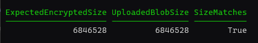
Note: This only confirms the Azure upload; Intune still needs to validate and commit the content in the next step.
Step 7: Commit the Content
Tell Intune the bytes are in place and hand over the encryption info from step 2. Intune decrypts, verifies, and marks the content usable. Commit is asynchronous, so poll until commitFileSuccess. A commitFileFailed means the bytes and the encryption info do not match, so rebuild and re-upload rather than retrying the commit.
$commitBody = @{ fileEncryptionInfo = $encryptionInfo } | ConvertTo-Json -Depth 5 -Compress
Invoke-MgGraphRequest -Method POST -Uri "$fileUri/commit" -Body $commitBody -ContentType "application/json"
do {
Start-Sleep -Seconds 5
$fileStatus = Invoke-MgGraphRequest -Method GET -Uri $fileUri
if ($fileStatus.uploadState -eq 'commitFileFailed') { throw "Commit failed" }
} until ($fileStatus.uploadState -eq 'commitFileSuccess')
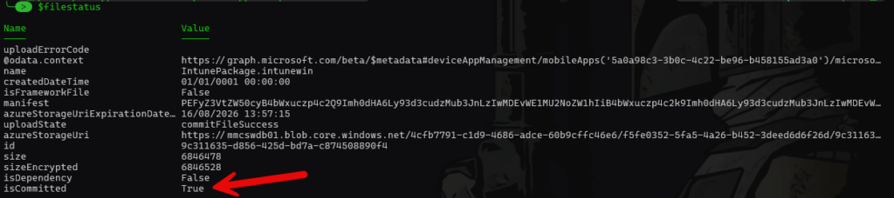
The result we are looking for is uploadState = commitFileSuccess and isCommitted = True. At this point Intune has successfully validated and committed the uploaded content, so the content version is ready to be associated with the app.
Step 8: Point the app at the content
The final call. Patch the app so its committedContentVersion points at the version you just finished. This associates the successfully committed content version with the app, giving the app its deployable content.
$patchBody = @{
"@odata.type" = "#microsoft.graph.win32LobApp"
committedContentVersion = $contentVersionId
} | ConvertTo-Json -Compress
Invoke-MgGraphRequest -Method PATCH -Uri "https://graph.microsoft.com/beta/deviceAppManagement/mobileApps/$appId" -Body $patchBody -ContentType "application/json"
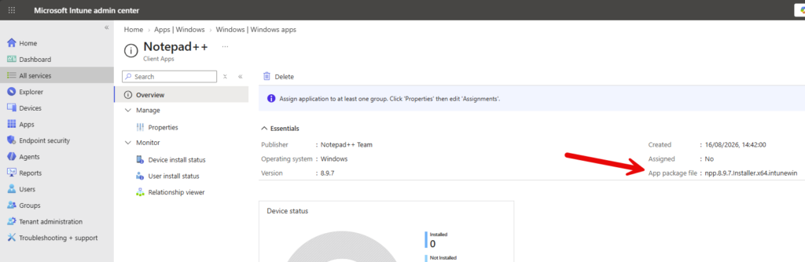
We can also verify the publishing state is PowerShell:
$appStatus = Invoke-MgGraphRequest `
-Method GET `
-Uri "https://graph.microsoft.com/beta/deviceAppManagement/mobileApps/$appId"
$appStatus | Select-Object displayName, committedContentVersion, publishingState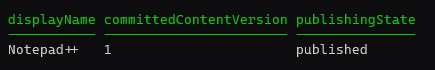
The app is now live in the portal and ready to assign. Congratulations! Now let’s dive deeper into detection and requirement rules. Hold tight.
Detection and requirement rules
Our Notepad++ app already has a registry detection rule because every Win32 app needs at least one detection rule. Detection tells Intune whether the application is already installed. Requirements answer a different question…whether the device is eligible to receive the application in the first place. Microsoft allows multiple detection rules, and when more than one is configured, all of them must evaluate successfully before Intune considers the app installed.
In Microsoft Graph, both detection and additional requirement rules live in the Win32 app’s rules collection. The available rule objects cover registry, file system, PowerShell script, and MSI product-code detection. Product-code rules are detection-only though…registry, file and PowerShell script rules can be used for detection or requirement purposes.
The important distinction is:
Detection: Is my application already installed?
Requirement: Should this device be allowed to install it?
For detection, my preference is to use the simplest reliable signal the application gives you. If an MSI exposes a stable product code, that can be a good starting point, although there are plenty of vendor-specific caveats once you dig deeper. For EXE installers that register cleanly in Add/Remove Programs (ARP), a registry version check is often an excellent choice. A file version can be stronger where the registry is unreliable, and I tend to reach for PowerShell only when the application needs more complicated logic, such as checking several registry locations or combining multiple conditions.
Requirements follow the same principle but you can use the built-in architecture, OS, disk, memory and processor properties where they fit, then registry or file rules for application-specific prerequisites, and PowerShell when the requirement genuinely needs logic that the simpler rule types cannot express.
Notepad++ ships as an NSIS executable rather than an MSI, so there is no product code to detect against. Detection comes down to registry, file, or script checks, which are the options you use most of the time anyway.
Detection: Registry
This is the detection method used by the Notepad++ app we created earlier.
Notepad++ exposes its installed version beneath the Windows uninstall registry key, so we can detect the application and validate its version with a single rule:
$registryDetectionRule = @{
"@odata.type" = "#microsoft.graph.win32LobAppRegistryRule"
ruleType = "detection"
keyPath = "HKEY_LOCAL_MACHINE\SOFTWARE\Microsoft\Windows\CurrentVersion\Uninstall\Notepad++"
valueName = "DisplayVersion"
operationType = "version"
operator = "greaterThanOrEqual"
comparisonValue = "8.9.7.0"
check32BitOn64System = $false
}operationType = "version" tells Intune to interpret the registry value using version semantics rather than comparing it as a plain string. Registry rules can also check whether a key or value exists or does not exist, or compare string and integer values. Because this is the 64-bit Notepad++ build, check32BitOn64System remains $false; setting it to $true tells Intune to search the 32-bit registry view on a 64-bit device.
Timeout folks, this stuff isnt always so easy
The Notepad++ example above makes registry detection look straightforward right? Find an uninstall key, read DisplayVersion, and compare it with the version you expect.
In the real world, detection gets considerably messier.
The Windows Add/Remove Programs (ARP) registry is primarily application metadata. It is not necessarily an authoritative representation of the files currently installed on disk. For example, if an application is updated while it is still running, some vendors may update the ARP DisplayVersion while an older executable remains on disk. What you end up with in that scenario is the version reported in ARP and the version of the executable you actually care about can differ…this is a nightmare for your EDR teams. Notepad++ behaves specifically in this way. I can guarentee if you perform an inventory across your device fleet of ARP reported versions vs binary versions on disk – you will find discrepancies.
There are plenty of other vendor-specific behaviours to account for:
- An application may register itself more than once in ARP.
- MSI-based applications may expose
WindowsInstaller = 1, which can change how you should think about identification and detection. - An application appearing beneath the 64-bit uninstall registry path does not automatically mean that the application itself is 64-bit.
- Vendors sometimes change registry paths, product codes, display names, or version formats between releases.
- Some installers leave old ARP entries behind after an upgrade.
- Per-user and per-machine installations may register in completely different locations.
- A registry version may represent the installer/product version while the executable exposes a different file or product version.
- The correct detection logic may also depend on the application’s installer technology, architecture, upgrade behaviour, and whether multiple editions or channels can coexist.
This is where application packaging starts to become less about writing a registry rule and more about understanding the semantics of the application you are detecting.
A rule can be perfectly valid PowerShell or Microsoft Graph and still be the wrong rule for that particular application.
That is also one of the reasons organisations often favour maintained third-party application catalogues and patching solutions rather than building and maintaining every application themselves. Creating detection for a handful of applications is relatively easy. Maintaining accurate detection and requirement logic across hundreds or thousands of applications and versions means continually understanding the quirks of individual vendors, installers, architectures, upgrade paths, and release behaviours.
The difficult part is rarely knowing how to create an Intune detection rule. The difficult part is knowing which detection rule is actually correct for that application, and whether it will remain correct when the vendor changes something in the next release.
Detection: File or Folder
If an application does not expose a useful registry entry, a file or folder can make a good detection target.
For Notepad++, we could simply check that its executable exists:
$fileDetectionRule = @{
"@odata.type" = "#microsoft.graph.win32LobAppFileSystemRule"
ruleType = "detection"
path = "C:\Program Files\Notepad++"
fileOrFolderName = "notepad++.exe"
operationType = "exists"
operator = "notConfigured"
comparisonValue = $null
check32BitOn64System = $false
}A file rule can do more than check existence. It can compare file version, creation date, modified date or size. The Graph beta API also exposes doesNotExist, sizeInBytes and appVersion operations in addition to the operations available in v1.0.
For example, detecting Notepad++ by executable version instead would look like:
$fileDetectionRule = @{
"@odata.type" = "#microsoft.graph.win32LobAppFileSystemRule"
ruleType = "detection"
path = "C:\Program Files\Notepad++"
fileOrFolderName = "notepad++.exe"
operationType = "version"
operator = "greaterThanOrEqual"
comparisonValue = "8.9.7"
check32BitOn64System = $false
}A version check is normally stronger than simply checking that a file exists, because an old installation may leave exactly the same executable path behind.
Detection: MSI Product Code
If the application is an MSI and exposes a stable product code, Graph has a dedicated product-code rule:
$msiDetectionRule = @{
"@odata.type" = "#microsoft.graph.win32LobAppProductCodeRule"
ruleType = "detection"
productCode = "{YOUR-MSI-PRODUCT-CODE}"
productVersionOperator = "greaterThanOrEqual"
productVersion = "1.0.0"
}The product-code rule is specifically a detection rule, Microsoft does not support it as an additional requirement rule.
It does not apply to our Notepad++ example because the installer we are packaging is an EXE rather than an MSI, but for MSI-based applications this is often the simplest detection mechanism available.
Detection: PowerShell Script
PowerShell is king when registry, file or MSI tests are not enough.
A detection script can check several registry locations, inspect configuration, query services, validate multiple files, or combine several conditions into one decision.
For example:
$detectionScript = @'
$displayName = "Notepad++*"
$minVersion = [version]"8.9.7"
$registryPaths = @(
'HKLM:\SOFTWARE\Microsoft\Windows\CurrentVersion\Uninstall\*',
'HKLM:\SOFTWARE\WOW6432Node\Microsoft\Windows\CurrentVersion\Uninstall\*'
)
foreach ($path in $registryPaths) {
$items = Get-ItemProperty $path -ErrorAction SilentlyContinue |
Where-Object { $_.DisplayName -like $displayName }
foreach ($item in $items) {
if (-not $item.DisplayVersion) {
continue
}
try {
if ([version]$item.DisplayVersion -ge $minVersion) {
Write-Output "Detected $($item.DisplayName) $($item.DisplayVersion)"
exit 0
}
}
catch {
continue
}
}
}
exit 1
'@Microsoft’s detection contract is super important here. Intune considers the app detected when the script exits with code 0 and writes data to STDOUT. A non-zero exit code means not detected. Also watch STDERR…if the script writes anything to STDERR, Intune evaluates the application as not installed even if the script returned 0 and wrote valid output to STDOUT.
Note: Microsoft recommends UTF-8 BOM encoding for custom detection scripts.
To put the script above into the Graph app body:
$scriptDetectionRule = @{
"@odata.type" = "#microsoft.graph.win32LobAppPowerShellScriptRule"
ruleType = "detection"
enforceSignatureCheck = $false
runAs32Bit = $false
operationType = "notConfigured"
operator = "notConfigured"
scriptContent = [Convert]::ToBase64String(
[Text.Encoding]::UTF8.GetBytes($detectionScript)
)
}Notice there is no runAsAccount here. Microsoft specifies that detection scripts run in the same context as the associated app installation, whereas requirement scripts can explicitly specify system or user. A detection rule also leaves operationType and operator as notConfigured because the script itself decides whether detection succeeded.
There is also a small PowerShell version gotcha worth knowing. [version]"8.9.7" has an undefined revision component rather than silently becoming 8.9.7.0, so be intentional about the number of version components you compare in your own scripts. .NET represents unspecified Version components as -1.
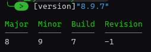
Requirement Rules
Requirements are evaluated before installation and determine whether the device is applicable for the app.
Our running example already contains one requirement:
allowedArchitectures = "x64"
That prevents the x64 Notepad++ package from being considered applicable on architectures outside the value we specify. Graph also exposes some Win32 app properties for minimum free disk space, memory, processor count and CPU speed. These properties live directly on the win32LobApp object, they are not objects inside the rules array.
For example:
allowedArchitectures = "x64" minimumFreeDiskSpaceInMB = 10240 minimumMemoryInMB = 4096 minimumNumberOfProcessors = 2 minimumCpuSpeedInMHz = 1400
Graph also exposes minimumSupportedWindowsRelease for specifying a minimum Windows release.
Where one of those built-in properties expresses what you need, I would use it rather than creating a custom rule. It makes the intent obvious and avoids writing logic that Intune already understands natively.
Requirement: Registry and File
The same registry and file-system rule objects used for detection that we looked at previously can also be used as requirements by changing:
to:
Both resource types explicitly support detection and requirement rule types.
For example, suppose our application should only install if another product has registered a particular key:
$registryRequirementRule = @{
"@odata.type" = "#microsoft.graph.win32LobAppRegistryRule"
ruleType = "requirement"
keyPath = "HKEY_LOCAL_MACHINE\SOFTWARE\Contoso\Prerequisite"
valueName = ""
operationType = "exists"
operator = "notConfigured"
comparisonValue = $null
check32BitOn64System = $false
}Or perhaps a particular file must already exist:
$fileRequirementRule = @{
"@odata.type" = "#microsoft.graph.win32LobAppFileSystemRule"
ruleType = "requirement"
path = "C:\Program Files\Contoso"
fileOrFolderName = "prerequisite.dll"
operationType = "exists"
operator = "notConfigured"
comparisonValue = $null
check32BitOn64System = $false
}Requirement: PowerShell Script
Requirement scripts are useful when applicability depends on something that the built-in requirements, registry rules, or file rules cannot express cleanly.
They also behave differently from detection scripts. A detection script makes the decision itself: exit 0 plus STDOUT means installed. A requirement script instead outputs a value, and Intune compares that value using the data type, operator and comparison value configured on the rule. Microsoft documents requirement output types including string, date/time, integer, float, version and boolean.
For example, suppose an application should only be installed on devices where Secure Boot is enabled. PowerShell can determine that and simply return a Boolean value:
$requirementScript = @'
try {
$secureBootEnabled = Confirm-SecureBootUEFI -ErrorAction Stop
}
catch {
$secureBootEnabled = $false
}
Write-Output $secureBootEnabled
exit 0
'@The script deliberately does not decide whether the requirement passes. It only reports either True or False. Graph then defines how Intune should evaluate that value:
$requirementRule = @{
"@odata.type" = "#microsoft.graph.win32LobAppPowerShellScriptRule"
ruleType = "requirement"
displayName = "Secure Boot must be enabled"
enforceSignatureCheck = $false
runAs32Bit = $false
runAsAccount = "system"
operationType = "boolean"
operator = "equal"
comparisonValue = "True"
scriptContent = [Convert]::ToBase64String(
[Text.Encoding]::UTF8.GetBytes($requirementScript)
)
}Here, operationType = "boolean" tells Intune to interpret the script output as a Boolean value, operator = "equal" defines the comparison, and comparisonValue = "True" means the requirement is met only when the script reports that Secure Boot is enabled.
This is where PowerShell requirement rules become useful…the script gathers or calculates a value that Intune cannot obtain from one of its normal built-in requirement properties, while Intune remains responsible for evaluating the result.
Combining detection and requirement rules
Detection and additional requirement rules ultimately live together in the Win32 app’s rules collection. The ruleType property tells Intune whether each object is being used for detection or as an additional requirement.
For example:
rules = @(
$registryDetectionRule
$requirementRule
)If you configure multiple detection rules, all of them must evaluate successfully before Intune considers the application detected. That means additional detection rules should be added deliberately.
For our Notepad++ walkthrough, the configuration is deliberately simple:
allowedArchitectures = "x64"
rules = @(
$registryDetectionRule
)allowedArchitectures is a built-in requirement on the Win32 app itself, while $registryDetectionRule lives in the rules collection and determines whether the required version of Notepad++ is already installed.
How the Intune Management Extension processes a Win32 app
One slightly surprising detail is that the client-side order is not simply requirements > detection > install. Human logic might suggest you first ask, “Can this device even run the app?”, then “Is it already installed?”, and finally install it if needed…a bit like checking whether you can get to the petrol station before checking whether you actually need petrol.
IME does things differently. It checks dependencies first, then performs an initial detection check to see whether the application is already installed. Only if the app is not detected does it evaluate applicability and requirements. If those requirements are satisfied, IME can then move on to downloading and installing the content.
In other words, Intune effectively asks “Do I already have it?” before “Am I allowed to install it?”. That makes sense from an efficiency perspective I guess…if the application is already detected, there is no reason to evaluate whether the device qualifies for an installation that does not need to happen.
I’ve covered the processing order in some of my previous deep-dive sessions.
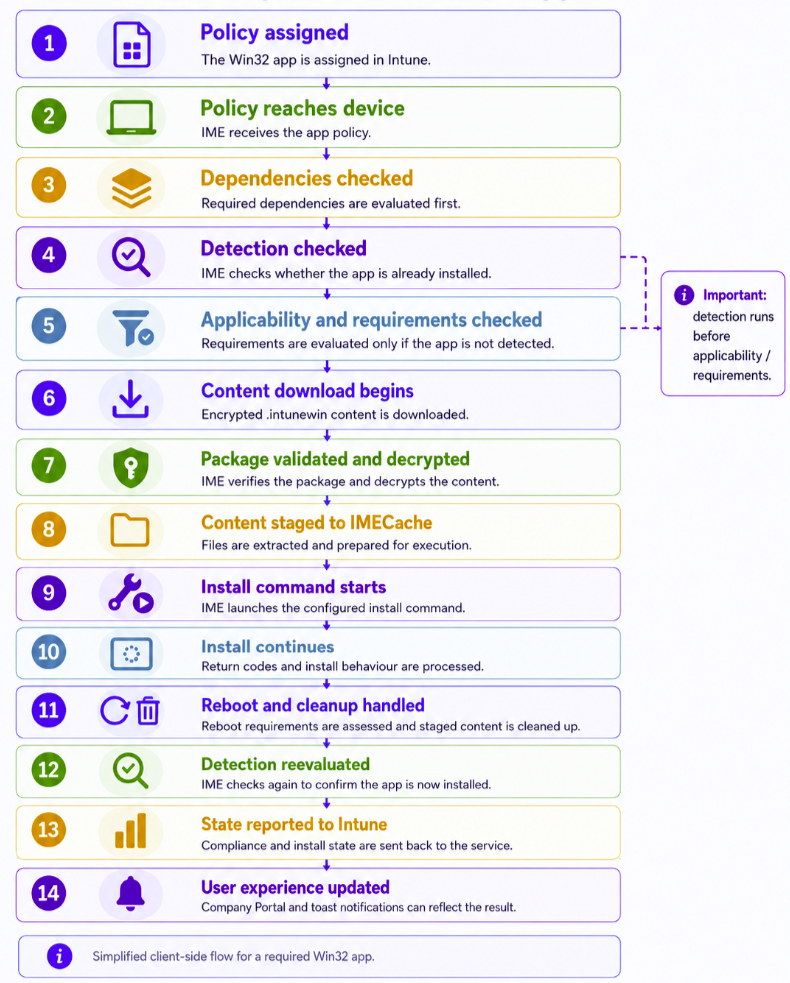
The Script
To use the script, update the configuration values at the top for the app and provide your Entra tenant ID, client ID and client secret when you run it.
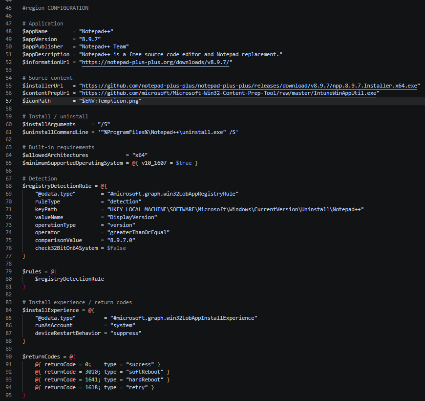
The script then works through a similar Win32 app creation flow covered already from the snippets in this post. It downloads and packages the installer, reads the .intunewin metadata, creates the app and content objects in Intune, uploads and commits the encrypted content, and finally points the app at the committed content version.
Progress is written to the console at each stage so you can see exactly where the script is up to. When it completes, it outputs the app name, version, Intune app ID and a direct link to the new app in the Intune admin center. It also writes a CMTrace-compatible log file to %TEMP%, which gives you a more detailed record of the run and is especially useful if one of the Graph or Azure Storage steps fails.
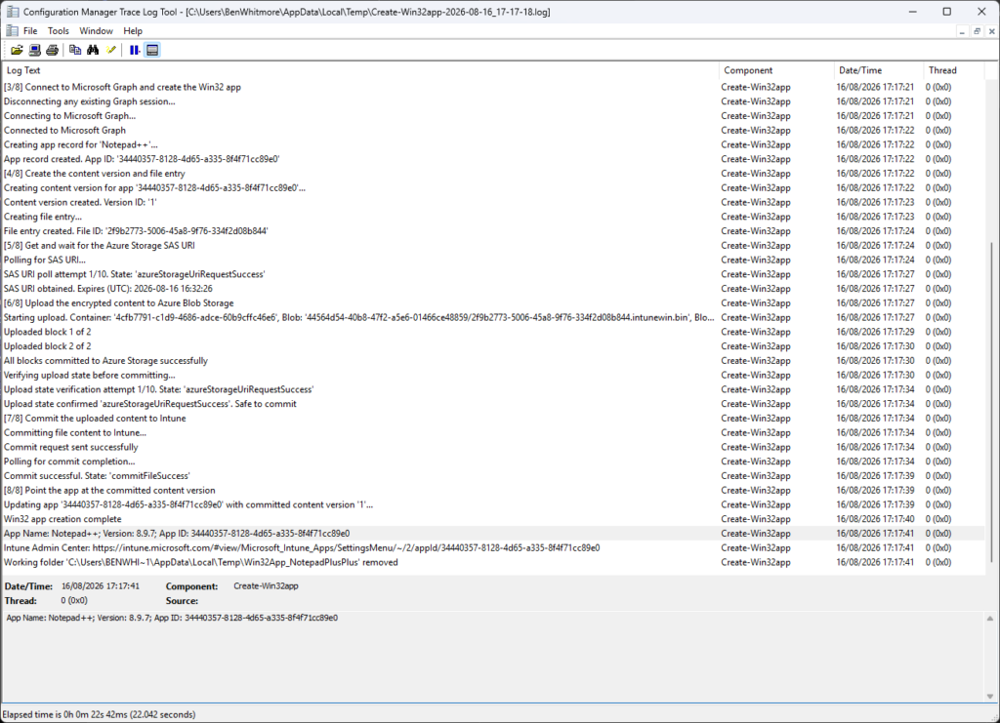
Once the script has completed, you are presented a link to the app in the Intune admin center!
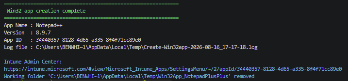
A note before you run this: $iconPath is required, and that is deliberate. The script will not create an app without one, and I am not adding an allowance to skip it. There is no room for that kind of sloppiness today, a blank grey tile in Company Portal screams unfinished and your users absolutely notice.
<#
.Synopsis
Creates the Notepad++ Win32 app in Intune using the Graph SDK PowerShell module.
Created on: 16/08/2026
Created by: Ben Whitmore
Filename: Create-Win32app.ps1
.Description
- Creates the Notepad++ Win32 app in Intune using the Graph SDK PowerShell module. Downloads the Win32 Content Prep Tool and the Notepad++ installer, builds an .intunewin, then uploads and commits to Intune via Graph SDK.
- Requires Microsoft.Graph.Authentication, Az.Storage PowerShell modules.
- Logs to console and CMTrace-compatible, log file in TEMP folder. Designed for testing and validation of Win32 app deployment in Intune.
- Client app used for authentication must have DeviceManagementApps.ReadWrite.All Graph API permission.
---------------------------------------------------------------------------------
LEGAL DISCLAIMER
The PowerShell script provided is shared with the community as-is
The author and co-author(s) make no warranties or guarantees regarding its functionality, reliability, or suitability for any specific purpose
Please note that the script may need to be modified or adapted to fit your specific environment or requirements
It is recommended to thoroughly test the script in a non-production environment before using it in a live or critical system
The author and co-author(s) cannot be held responsible for any damages, losses, or adverse effects that may arise from the use of this script
You assume all risks and responsibilities associated with its usage
---------------------------------------------------------------------------------
.Notes
- This script is intended for testing and validation purposes only and creates the Notepad++ 8.9.7 example used in the blog.
- Supply your Entra ID App Registration details as parameters when running the script.
- Application metadata, commands, detection, requirements, upload settings, and working paths are grouped in the CONFIGURATION region below.
.Example
.\Create-Win32app.ps1 -tenantId '<tenant-id>' -clientId '<client-id>' -clientSecret '<client-secret>'
.Example
.\Create-Win32app.ps1 -tenantId '<tenant-id>' -clientId '<client-id>' -certificateThumbprint '<certificate-thumbprint>'
#>
[CmdletBinding(DefaultParameterSetName = 'ClientSecret')]
param(
[Parameter(Mandatory)]
[ValidatePattern('^[0-9a-fA-F]{8}-[0-9a-fA-F]{4}-[0-9a-fA-F]{4}-[0-9a-fA-F]{4}-[0-9a-fA-F]{12}$')]
[string]$tenantId,
[Parameter(Mandatory)]
[ValidatePattern('^[0-9a-fA-F]{8}-[0-9a-fA-F]{4}-[0-9a-fA-F]{4}-[0-9a-fA-F]{4}-[0-9a-fA-F]{12}$')]
[string]$clientId,
[Parameter(Mandatory, ParameterSetName = 'ClientSecret')]
[string]$clientSecret,
[Parameter(Mandatory, ParameterSetName = 'Certificate')]
[string]$certificateThumbprint
)
#region CONFIGURATION
# Application
$appName = "Notepad++"
$appVersion = "8.9.7"
$appPublisher = "Notepad++ Team"
$appDescription = "Notepad++ is a free source code editor and Notepad replacement."
$informationUrl = "https://notepad-plus-plus.org/downloads/v8.9.7/"
# Source content
$installerUrl = "https://github.com/notepad-plus-plus/notepad-plus-plus/releases/download/v8.9.7/npp.8.9.7.Installer.x64.exe"
$contentPrepUrl = "https://github.com/microsoft/Microsoft-Win32-Content-Prep-Tool/raw/master/IntuneWinAppUtil.exe"
$iconPath = "$ENV:Temp\icon.png"
# Install / uninstall
$installArguments = "/S"
$uninstallCommandLine = '"%ProgramFiles%\Notepad++\uninstall.exe" /S'
# Built-in requirements
$allowedArchitectures = "x64"
$minimumSupportedOperatingSystem = @{ v10_1607 = $true }
# Detection
$registryDetectionRule = @{
"@odata.type" = "#microsoft.graph.win32LobAppRegistryRule"
ruleType = "detection"
keyPath = "HKEY_LOCAL_MACHINE\SOFTWARE\Microsoft\Windows\CurrentVersion\Uninstall\Notepad++"
valueName = "DisplayVersion"
operationType = "version"
operator = "greaterThanOrEqual"
comparisonValue = "8.9.7.0"
check32BitOn64System = $false
}
$rules = @(
$registryDetectionRule
)
# Install experience / return codes
$installExperience = @{
"@odata.type" = "#microsoft.graph.win32LobAppInstallExperience"
runAsAccount = "system"
deviceRestartBehavior = "suppress"
}
$returnCodes = @(
@{ returnCode = 0; type = "success" }
@{ returnCode = 3010; type = "softReboot" }
@{ returnCode = 1641; type = "hardReboot" }
@{ returnCode = 1618; type = "retry" }
)
# Upload behaviour
$maxRetries = 10
$blockSize = 4 * 1024 * 1024
$sasRenewalThresholdMinutes = 5
# Working folders
$root = Join-Path $env:TEMP "Win32App_NotepadPlusPlus"
$contentFolder = Join-Path $root "Content"
$outputFolder = Join-Path $root "Output"
$toolFolder = Join-Path $root "Tool"
#endregion
#region LOG
$logDateTime = Get-Date -Format "yyyy-MM-dd_HH-mm-ss"
$logPath = Join-Path $env:TEMP ("Create-Win32app-{0}.log" -f $logDateTime)
function Write-CMTraceLog {
param(
[Parameter(Mandatory = $true)]
[string]$Message,
[Parameter(Mandatory = $false)]
[ValidateSet(1, 2, 3)]
[int]$Severity = 1,
[Parameter(Mandatory = $false)]
[string]$Component = "Create-Win32app"
)
$timeStamp = Get-Date -Format "HH:mm:ss.fff"
$dateStamp = Get-Date -Format "MM-dd-yyyy"
$logEntry = '<![LOG[{0}]LOG]!><time="{1}+000" date="{2}" component="{3}" context="" type="{4}" thread="" file="">' -f $Message, $timeStamp, $dateStamp, $Component, $Severity
Add-Content -Path $logPath -Value $logEntry -Encoding UTF8
}
function Write-LogAndHost {
param(
[Parameter(Mandatory = $true)]
[string]$Message,
[Parameter(Mandatory = $false)]
[ValidateSet(1, 2, 3)]
[int]$Severity = 1,
[Parameter(Mandatory = $false)]
[string]$Component = "Create-Win32app",
[Parameter(Mandatory = $false)]
[string]$ForegroundColor = "White"
)
switch ($Severity) {
2 { $ForegroundColor = "Yellow" }
3 { $ForegroundColor = "Red" }
}
Write-Host $Message -ForegroundColor $ForegroundColor
Write-CMTraceLog -Message $Message -Severity $Severity -Component $Component
}
function Write-Stage {
param(
[Parameter(Mandatory = $true)]
[int]$Number,
[Parameter(Mandatory = $true)]
[string]$Message
)
$stageMessage = ("[{0}/8] {1}" -f $Number, $Message)
Write-Host ""
Write-Host $stageMessage -ForegroundColor Cyan
Write-CMTraceLog -Message $stageMessage -Component "Create-Win32app"
}
function Get-GraphErrorDetail {
<#
.Description
Extracts the full error detail from a failed Invoke-MgGraphRequest call.
$_.Exception.Message only returns the HTTP status line. The actual Graph error
code, message and request ID are in $_.ErrorDetails.Message as JSON.
#>
param(
[Parameter(Mandatory = $true)]
[System.Management.Automation.ErrorRecord]$ErrorRecord
)
$detail = [ordered]@{
ExceptionMessage = $ErrorRecord.Exception.Message
GraphErrorCode = $null
GraphMessage = $null
RequestId = $null
RawErrorBody = $null
}
if ($ErrorRecord.ErrorDetails.Message) {
$detail.RawErrorBody = $ErrorRecord.ErrorDetails.Message
try {
$parsed = $ErrorRecord.ErrorDetails.Message | ConvertFrom-Json -ErrorAction Stop
if ($parsed.error) {
$detail.GraphErrorCode = $parsed.error.code
$detail.GraphMessage = $parsed.error.message
$detail.RequestId = $parsed.error.innerError.'request-id'
}
}
catch {
# JSON parse failed - RawErrorBody already captured above
}
}
return $detail
}
function Invoke-IntuneSasRenewal {
<#
.Description
Requests a fresh Azure Storage SAS URI for an in-progress upload by calling the
renewUpload action on the file entry, then polls until the renewal succeeds.
The blob location (container/path) stays the same - only the SAS token is refreshed -
so blocks already staged remain valid. Returns the new azureStorageUri.
#>
param(
[Parameter(Mandatory = $true)]
[string]$FileUri,
[Parameter(Mandatory = $false)]
[int]$MaxRetries = 10
)
Write-LogAndHost -Message "Renewing Azure Storage SAS URI..." -Severity 2
Invoke-MgGraphRequest -Method POST -Uri ("{0}/renewUpload" -f $FileUri) -Body "{}" -ContentType "application/json" | Out-Null
$attempt = 0
do {
Start-Sleep -Seconds 3
$status = Invoke-MgGraphRequest -Method GET -Uri $FileUri
$attempt++
Write-LogAndHost -Message ("SAS renewal poll attempt {0}/{1}. State: '{2}'" -f $attempt, $MaxRetries, $status.uploadState) -ForegroundColor Cyan
} until ($status.uploadState -eq 'azureStorageUriRenewalSuccess' -or $attempt -ge $MaxRetries)
if ($status.uploadState -ne 'azureStorageUriRenewalSuccess') {
throw ("SAS renewal failed after {0} attempts. Final state: '{1}'" -f $MaxRetries, $status.uploadState)
}
Write-LogAndHost -Message "SAS URI renewed successfully" -ForegroundColor Green
return $status.azureStorageUri
}
function New-IntuneBlobClient {
<#
.Description
Builds a CloudBlockBlob from the raw azureStorageUri STRING. The SAS token is passed
to StorageCredentials as a string and the blob address is parsed without its query,
so the SAS signature is never re-encoded/mangled by [System.Uri] - which is the usual
cause of an immediate "Server failed to authenticate the request ... signature" 403.
#>
param(
[Parameter(Mandatory = $true)]
[string]$AzureStorageUri
)
$qIndex = $AzureStorageUri.IndexOf('?')
if ($qIndex -lt 0) {
throw "Azure Storage URI does not contain a SAS token."
}
$blobBaseUri = $AzureStorageUri.Substring(0, $qIndex)
$sasToken = $AzureStorageUri.Substring($qIndex + 1) # SAS token without leading '?'
$credentials = [Microsoft.Azure.Storage.Auth.StorageCredentials]::new($sasToken)
return [Microsoft.Azure.Storage.Blob.CloudBlockBlob]::new([System.Uri]::new($blobBaseUri), $credentials)
}
function Get-StorageErrorDetail {
<#
.Description
Extracts detail from an Azure Storage failure. The useful information (HTTP status,
Azure error code, service request id, extended message) lives on the nested
StorageException.RequestInformation, not on the top-level PowerShell wrapper message.
Also builds the full inner-exception chain so nothing is lost.
#>
param(
[Parameter(Mandatory = $true)]
[System.Management.Automation.ErrorRecord]$ErrorRecord
)
$detail = [ordered]@{
ExceptionChain = $null
HttpStatusCode = $null
HttpStatusMessage = $null
StorageErrorCode = $null
ExtendedMessage = $null
ServiceRequestId = $null
AdditionalDetails = $null
Summary = $null
}
# Walk the inner-exception chain and locate any StorageException within it
$chain = @()
$ex = $ErrorRecord.Exception
$storageEx = $null
while ($ex) {
$chain += ("[{0}] {1}" -f $ex.GetType().Name, $ex.Message)
if (-not $storageEx -and $ex.GetType().FullName -like '*Storage.StorageException') {
$storageEx = $ex
}
$ex = $ex.InnerException
}
$detail.ExceptionChain = $chain -join ' --> '
if ($storageEx -and $storageEx.RequestInformation) {
$ri = $storageEx.RequestInformation
$detail.HttpStatusCode = $ri.HttpStatusCode
$detail.HttpStatusMessage = $ri.HttpStatusMessage
$detail.ServiceRequestId = $ri.ServiceRequestID
if ($ri.ExtendedErrorInformation) {
$detail.StorageErrorCode = $ri.ExtendedErrorInformation.ErrorCode
$detail.ExtendedMessage = $ri.ExtendedErrorInformation.ErrorMessage
if ($ri.ExtendedErrorInformation.AdditionalDetails -and $ri.ExtendedErrorInformation.AdditionalDetails.Count -gt 0) {
$detail.AdditionalDetails = (($ri.ExtendedErrorInformation.AdditionalDetails.GetEnumerator() | ForEach-Object { '{0}={1}' -f $_.Key, $_.Value }) -join '; ')
}
}
}
$summaryParts = @()
if ($detail.HttpStatusCode) { $summaryParts += ("HTTP {0} {1}" -f [int]$detail.HttpStatusCode, $detail.HttpStatusMessage) }
if ($detail.StorageErrorCode) { $summaryParts += ("Code={0}" -f $detail.StorageErrorCode) }
if ($detail.ExtendedMessage) { $summaryParts += $detail.ExtendedMessage }
if ($detail.ServiceRequestId) { $summaryParts += ("x-ms-request-id={0}" -f $detail.ServiceRequestId) }
if (-not $summaryParts) { $summaryParts += $ErrorRecord.Exception.Message }
$detail.Summary = $summaryParts -join ' | '
return $detail
}
#endregion
Write-LogAndHost -Message ("Log started: {0}" -f $logPath) -ForegroundColor Cyan
#region MODULES
foreach ($module in @('Microsoft.Graph.Authentication', 'Az.Storage')) {
if (-not (Get-Module -ListAvailable -Name $module)) {
Write-LogAndHost -Message ("Module '{0}' not found. Installing..." -f $module) -Severity 2
Install-Module $module -Force -Scope CurrentUser
}
Import-Module $module -Force
Write-LogAndHost -Message ("Module '{0}' loaded" -f $module) -ForegroundColor Cyan
}
#endregion
#region WORKING FOLDERS
if (-not (Test-Path $iconPath -PathType Leaf)) {
throw ("Icon file not found: '{0}'" -f $iconPath)
}
# Preserve the icon bytes before recreating the temporary working folder.
$iconBytes = [IO.File]::ReadAllBytes($iconPath)
if (Test-Path $root) {
Get-ChildItem $root -Force | Remove-Item -Recurse -Force -ErrorAction SilentlyContinue
}
foreach ($folder in @($root, $contentFolder, $outputFolder, $toolFolder)) {
New-Item -ItemType Directory -Path $folder -Force | Out-Null
}
[IO.File]::WriteAllBytes((Join-Path $root "icon.png"), $iconBytes)
Write-LogAndHost -Message ("Working folder: '{0}'" -f $root) -ForegroundColor Cyan
#endregion
# Tracks which step we are in so the catch block can report exactly where it failed
$currentStep = "Initialise"
try {
#region 1. DOWNLOAD WIN32 CONTENT PREP TOOL
Write-Stage -Number 1 -Message "Build the .intunewin"
$currentStep = "Download Win32 Content Prep Tool"
$toolPath = Join-Path $toolFolder "IntuneWinAppUtil.exe"
Write-LogAndHost -Message ("Downloading Win32 Content Prep Tool from '{0}'" -f $contentPrepUrl) -ForegroundColor Cyan
Invoke-WebRequest -Uri $contentPrepUrl -OutFile $toolPath -UseBasicParsing
if (-not (Test-Path $toolPath)) {
throw ("Win32 Content Prep Tool download failed. File not found at '{0}'" -f $toolPath)
}
Write-LogAndHost -Message ("Win32 Content Prep Tool downloaded to '{0}'" -f $toolPath) -ForegroundColor Green
#endregion
#region 2. DOWNLOAD APPLICATION INSTALLER
$currentStep = "Download application installer"
$installerFileName = Split-Path $installerUrl -Leaf
$installerPath = Join-Path $contentFolder $installerFileName
Write-LogAndHost -Message ("Downloading '{0}' from '{1}'" -f $installerFileName, $installerUrl) -ForegroundColor Cyan
Invoke-WebRequest -Uri $installerUrl -OutFile $installerPath -UseBasicParsing
if (-not (Test-Path $installerPath)) {
throw ("Installer download failed. File not found at '{0}'" -f $installerPath)
}
Write-LogAndHost -Message ("Installer downloaded to '{0}'" -f $installerPath) -ForegroundColor Green
#endregion
#region 3. BUILD .intunewin
$currentStep = "Build .intunewin"
Write-LogAndHost -Message "Building .intunewin file..." -ForegroundColor Cyan
$arguments = @('-s', ('"{0}"' -f $installerPath), '-c', ('"{0}"' -f $contentFolder), '-o', ('"{0}"' -f $outputFolder), '-q')
Write-LogAndHost -Message ("Running: '{0} {1}'" -f $toolPath, ($arguments -join ' ')) -ForegroundColor Cyan
$process = Start-Process -FilePath $toolPath -ArgumentList $arguments -Wait -PassThru
if ($process.ExitCode -ne 0) {
throw ("IntuneWinAppUtil.exe exited with code {0}" -f $process.ExitCode)
}
$intuneWinFile = Get-ChildItem $outputFolder -Filter "*.intunewin" | Select-Object -First 1
if (-not $intuneWinFile) {
throw ("No .intunewin file found in '{0}' after running the content prep tool" -f $outputFolder)
}
$intuneWinPath = $intuneWinFile.FullName
Write-LogAndHost -Message ("Built .intunewin: '{0}'" -f $intuneWinPath) -ForegroundColor Green
#endregion
#region 4. EXTRACT .intunewin METADATA
Write-Stage -Number 2 -Message "Read the .intunewin metadata and encryption information"
$currentStep = "Extract .intunewin metadata"
Write-LogAndHost -Message "Extracting .intunewin metadata..." -ForegroundColor Cyan
Add-Type -AssemblyName System.IO.Compression.FileSystem
$extractPath = Join-Path $root "Extract"
if (Test-Path $extractPath) {
Remove-Item $extractPath -Recurse -Force
}
New-Item -ItemType Directory -Path $extractPath -Force | Out-Null
[System.IO.Compression.ZipFile]::ExtractToDirectory($intuneWinPath, $extractPath)
$metaXml = [xml](Get-Content (Join-Path $extractPath "IntuneWinPackage\Metadata\Detection.xml"))
$encryptedFilePath = Get-ChildItem (Join-Path $extractPath "IntuneWinPackage\Contents") | Select-Object -First 1 -ExpandProperty FullName
$sizeEncrypted = (Get-Item $encryptedFilePath).Length
$sizeUnencrypted = [int64]$metaXml.ApplicationInfo.UnencryptedContentSize
Write-LogAndHost -Message ("Metadata extracted. Encrypted: {0} bytes, Unencrypted: {1} bytes" -f $sizeEncrypted, $sizeUnencrypted) -ForegroundColor Green
$encryptionInfo = @{
encryptionKey = $metaXml.ApplicationInfo.EncryptionInfo.EncryptionKey
macKey = $metaXml.ApplicationInfo.EncryptionInfo.MacKey
initializationVector = $metaXml.ApplicationInfo.EncryptionInfo.InitializationVector
mac = $metaXml.ApplicationInfo.EncryptionInfo.Mac
profileIdentifier = "ProfileVersion1"
fileDigest = $metaXml.ApplicationInfo.EncryptionInfo.FileDigest
fileDigestAlgorithm = $metaXml.ApplicationInfo.EncryptionInfo.FileDigestAlgorithm
}
Write-LogAndHost -Message ("Encryption info parsed. Algorithm: '{0}'" -f $encryptionInfo.fileDigestAlgorithm) -ForegroundColor Cyan
#endregion
#region 5. CONNECT TO GRAPH
Write-Stage -Number 3 -Message "Connect to Microsoft Graph and create the Win32 app"
$currentStep = "Connect to Microsoft Graph"
# Disconnect any existing cached session
Write-LogAndHost -Message "Disconnecting any existing Graph session..." -ForegroundColor Cyan
Disconnect-MgGraph -ErrorAction SilentlyContinue | Out-Null
if ($PSCmdlet.ParameterSetName -eq 'Certificate') {
Write-LogAndHost -Message "Connecting to Microsoft Graph using a certificate..." -ForegroundColor Cyan
Connect-MgGraph `
-TenantId $tenantId `
-ClientId $clientId `
-CertificateThumbprint $certificateThumbprint `
-NoWelcome
}
else {
Write-LogAndHost -Message "Connecting to Microsoft Graph using a client secret..." -ForegroundColor Cyan
$secureSecret = ConvertTo-SecureString $clientSecret -AsPlainText -Force
$credential = New-Object System.Management.Automation.PSCredential($clientId, $secureSecret)
Connect-MgGraph `
-TenantId $tenantId `
-ClientSecretCredential $credential `
-NoWelcome
}
Write-LogAndHost -Message ("Connected to Microsoft Graph using {0} authentication" -f $PSCmdlet.ParameterSetName) -ForegroundColor Green
#endregion
#region 6. CREATE APP RECORD
$currentStep = "Create app record"
Write-LogAndHost -Message ("Creating app record for '{0}'..." -f $appName) -ForegroundColor Cyan
$appBody = [ordered]@{
"@odata.type" = "#microsoft.graph.win32LobApp"
displayName = $appName
description = $appDescription
publisher = $appPublisher
displayVersion = $appVersion
informationUrl = $informationUrl
largeIcon = @{
"@odata.type" = "#microsoft.graph.mimeContent"
type = "image/png"
value = [Convert]::ToBase64String(
[IO.File]::ReadAllBytes("$root\icon.png")
)
}
fileName = $intuneWinFile.Name
setupFilePath = $installerFileName
installCommandLine = "$installerFileName $installArguments"
uninstallCommandLine = $uninstallCommandLine
allowedArchitectures = $allowedArchitectures
minimumSupportedOperatingSystem = $minimumSupportedOperatingSystem
installExperience = $installExperience
returnCodes = $returnCodes
rules = $rules
} | ConvertTo-Json -Depth 10 -Compress
$app = Invoke-MgGraphRequest -Method POST -Uri "https://graph.microsoft.com/beta/deviceAppManagement/mobileApps" -Body $appBody -ContentType "application/json"
$appId = $app.id
Write-LogAndHost -Message ("App record created. App ID: '{0}'" -f $appId) -ForegroundColor Green
#endregion
#region 7. CREATE CONTENT VERSION
Write-Stage -Number 4 -Message "Create the content version and file entry"
$currentStep = "Create content version"
Write-LogAndHost -Message ("Creating content version for app '{0}'..." -f $appId) -ForegroundColor Cyan
$contentVersion = Invoke-MgGraphRequest -Method POST -Uri ("https://graph.microsoft.com/beta/deviceAppManagement/mobileApps/{0}/microsoft.graph.win32LobApp/contentVersions" -f $appId) -Body "{}" -ContentType "application/json"
$contentVersionId = $contentVersion.id
Write-LogAndHost -Message ("Content version created. Version ID: '{0}'" -f $contentVersionId) -ForegroundColor Green
#endregion
#region 8. CREATE FILE ENTRY
$currentStep = "Create file entry"
Write-LogAndHost -Message "Creating file entry..." -ForegroundColor Cyan
$fileBody = [ordered]@{
"@odata.type" = "#microsoft.graph.mobileAppContentFile"
name = $metaXml.ApplicationInfo.FileName
size = $sizeUnencrypted
sizeEncrypted = $sizeEncrypted
isDependency = $false
manifest = $null
} | ConvertTo-Json -Compress
$fileEntry = Invoke-MgGraphRequest -Method POST -Uri ("https://graph.microsoft.com/beta/deviceAppManagement/mobileApps/{0}/microsoft.graph.win32LobApp/contentVersions/{1}/files" -f $appId, $contentVersionId) -Body $fileBody -ContentType "application/json"
$fileId = $fileEntry.id
$fileUri = "https://graph.microsoft.com/beta/deviceAppManagement/mobileApps/{0}/microsoft.graph.win32LobApp/contentVersions/{1}/files/{2}" -f $appId, $contentVersionId, $fileId
Write-LogAndHost -Message ("File entry created. File ID: '{0}'" -f $fileId) -ForegroundColor Green
#endregion
#region 9. POLL FOR SAS URI
Write-Stage -Number 5 -Message "Get and wait for the Azure Storage SAS URI"
$currentStep = "Poll for SAS URI"
Write-LogAndHost -Message "Polling for SAS URI..." -ForegroundColor Cyan
$attempt = 0
do {
Start-Sleep -Seconds 3
$fileStatus = Invoke-MgGraphRequest -Method GET -Uri $fileUri
$attempt++
Write-LogAndHost -Message ("SAS URI poll attempt {0}/{1}. State: '{2}'" -f $attempt, $maxRetries, $fileStatus.uploadState) -ForegroundColor Cyan
} until ($fileStatus.uploadState -eq 'azureStorageUriRequestSuccess' -or $attempt -ge $maxRetries)
if ($fileStatus.uploadState -ne 'azureStorageUriRequestSuccess') {
throw ("Failed to get SAS URI after {0} attempts. Final state: '{1}'" -f $maxRetries, $fileStatus.uploadState)
}
$azureStorageUri = $fileStatus.azureStorageUri
$sasUri = [System.Uri]::new($azureStorageUri)
# Track SAS expiry so the upload loop can renew before it lapses
$sasExpiry = [datetime]::MaxValue
if ($fileStatus.azureStorageUriExpirationDateTime) {
$sasExpiry = ([datetime]$fileStatus.azureStorageUriExpirationDateTime).ToUniversalTime()
Write-LogAndHost -Message ("SAS URI obtained. Expires (UTC): {0:yyyy-MM-dd HH:mm:ss}" -f $sasExpiry) -ForegroundColor Green
}
else {
Write-LogAndHost -Message "SAS URI obtained successfully" -ForegroundColor Green
}
#endregion
#region 10. UPLOAD VIA CloudBlockBlob
Write-Stage -Number 6 -Message "Upload the encrypted content to Azure Blob Storage"
$currentStep = "Upload to Azure Blob Storage"
$container = $sasUri.AbsolutePath.Split('/')[1]
$blobPath = $sasUri.AbsolutePath.Substring($container.Length + 2)
$totalBlocks = [Math]::Ceiling($sizeEncrypted / $blockSize)
Write-LogAndHost -Message ("Starting upload. Container: '{0}', Blob: '{1}', Blocks: {2}" -f $container, $blobPath, $totalBlocks) -ForegroundColor Cyan
$fileStream = [System.IO.File]::OpenRead($encryptedFilePath)
$buffer = New-Object Byte[] $blockSize
$blockIds = New-Object 'System.Collections.Generic.List[System.String]'
$blobClient = New-IntuneBlobClient -AzureStorageUri $azureStorageUri
try {
$i = 0
while (($bytesRead = $fileStream.Read($buffer, 0, $buffer.Length)) -gt 0) {
$encodedBlockId = [Convert]::ToBase64String([Text.Encoding]::UTF8.GetBytes([Guid]::NewGuid().ToString()))
$blockIds.Add($encodedBlockId)
$memStream = New-Object System.IO.MemoryStream
$memStream.Write($buffer, 0, $bytesRead)
$memStream.Position = 0
# Proactively renew the SAS if it is within 5 minutes of expiry
if ((Get-Date).ToUniversalTime().AddMinutes($sasRenewalThresholdMinutes) -ge $sasExpiry) {
Write-LogAndHost -Message "SAS URI is near expiry - renewing before next block" -Severity 2
$azureStorageUri = Invoke-IntuneSasRenewal -FileUri $fileUri -MaxRetries $maxRetries
$blobClient = New-IntuneBlobClient -AzureStorageUri $azureStorageUri
$refreshed = Invoke-MgGraphRequest -Method GET -Uri $fileUri
if ($refreshed.azureStorageUriExpirationDateTime) {
$sasExpiry = ([datetime]$refreshed.azureStorageUriExpirationDateTime).ToUniversalTime()
}
}
# Upload the block. Retry with back-off; renew the SAS only if it is at/near
# expiry - renewal cannot fix a corrupted signature, so we do not renew blindly.
$blockAttempt = 0
$blockUploaded = $false
do {
try {
$memStream.Position = 0
$blobClient.PutBlock($encodedBlockId, $memStream, $null)
$blockUploaded = $true
}
catch {
$blockAttempt++
$storageErr = Get-StorageErrorDetail -ErrorRecord $_
Write-LogAndHost -Message ("PutBlock failed for block {0} (attempt {1}/4). {2}" -f ($i + 1), $blockAttempt, $storageErr.Summary) -Severity 2
if ($blockAttempt -ge 4) {
$memStream.Dispose()
throw ("PutBlock failed for block {0} after {1} attempts. {2}" -f ($i + 1), $blockAttempt, $storageErr.Summary)
}
if ((Get-Date).ToUniversalTime().AddMinutes($sasRenewalThresholdMinutes) -ge $sasExpiry) {
try {
$azureStorageUri = Invoke-IntuneSasRenewal -FileUri $fileUri -MaxRetries $maxRetries
$blobClient = New-IntuneBlobClient -AzureStorageUri $azureStorageUri
$refreshed = Invoke-MgGraphRequest -Method GET -Uri $fileUri
if ($refreshed.azureStorageUriExpirationDateTime) {
$sasExpiry = ([datetime]$refreshed.azureStorageUriExpirationDateTime).ToUniversalTime()
}
}
catch {
Write-LogAndHost -Message ("SAS renewal attempt failed: {0}" -f $_.Exception.Message) -Severity 2
}
}
$backoff = [int][Math]::Min(30, [Math]::Pow(2, $blockAttempt))
Write-LogAndHost -Message ("Retrying block {0} in {1}s..." -f ($i + 1), $backoff) -Severity 2
Start-Sleep -Seconds $backoff
}
} until ($blockUploaded)
$memStream.Dispose()
$i++
Write-LogAndHost -Message ("Uploaded block {0} of {1}" -f $i, $totalBlocks) -ForegroundColor Cyan
}
$blobClient.PutBlockList($blockIds)
Write-LogAndHost -Message "All blocks committed to Azure Storage successfully" -ForegroundColor Green
}
finally {
$fileStream.Dispose()
}
#endregion
#region 11. VERIFY UPLOAD STATE BEFORE COMMIT
$currentStep = "Verify upload state"
Write-LogAndHost -Message "Verifying upload state before committing..." -ForegroundColor Cyan
$attempt = 0
do {
Start-Sleep -Seconds 3
$fileStatus = Invoke-MgGraphRequest -Method GET -Uri $fileUri
$attempt++
Write-LogAndHost -Message ("Upload state verification attempt {0}/{1}. State: '{2}'" -f $attempt, $maxRetries, $fileStatus.uploadState) -ForegroundColor Cyan
} until ($fileStatus.uploadState -eq 'azureStorageUriRequestSuccess' -or $attempt -ge $maxRetries)
if ($fileStatus.uploadState -ne 'azureStorageUriRequestSuccess') {
throw ("Upload state check failed before commit after {0} attempts. Final state: '{1}'" -f $maxRetries, $fileStatus.uploadState)
}
Write-LogAndHost -Message ("Upload state confirmed '{0}'. Safe to commit" -f $fileStatus.uploadState) -ForegroundColor Green
#endregion
#region 12. COMMIT THE FILE
Write-Stage -Number 7 -Message "Commit the uploaded content to Intune"
$currentStep = "Commit file"
Write-LogAndHost -Message "Committing file content to Intune..." -ForegroundColor Cyan
$commitBody = @{ fileEncryptionInfo = $encryptionInfo } | ConvertTo-Json -Depth 5 -Compress
Invoke-MgGraphRequest -Method POST -Uri ("{0}/commit" -f $fileUri) -Body $commitBody -ContentType "application/json"
Write-LogAndHost -Message "Commit request sent successfully" -ForegroundColor Green
#endregion
#region 13. POLL FOR commitFileSuccess
$currentStep = "Poll for commit completion"
Write-LogAndHost -Message "Polling for commit completion..." -ForegroundColor Cyan
$attempt = 0
$success = $false
do {
Start-Sleep -Seconds 5
$fileStatus = Invoke-MgGraphRequest -Method GET -Uri $fileUri
$attempt++
if ($fileStatus.uploadState -eq 'commitFileSuccess') {
$success = $true
Write-LogAndHost -Message ("Commit successful. State: '{0}'" -f $fileStatus.uploadState) -ForegroundColor Green
}
elseif ($fileStatus.uploadState -eq 'commitFileFailed') {
throw ("Commit failed after {0} attempts. State: '{1}'" -f $attempt, $fileStatus.uploadState)
}
else {
Write-LogAndHost -Message ("Commit poll attempt {0}/{1}. State: '{2}'" -f $attempt, $maxRetries, $fileStatus.uploadState) -Severity 2
}
} until ($success -or $attempt -ge $maxRetries)
if (-not $success) {
throw ("Commit did not complete within {0} attempts. Final state: '{1}'" -f $maxRetries, $fileStatus.uploadState)
}
#endregion
#region 14. PATCH APP WITH COMMITTED CONTENT VERSION
Write-Stage -Number 8 -Message "Point the app at the committed content version"
$currentStep = "Patch app with committed content version"
Write-LogAndHost -Message ("Updating app '{0}' with committed content version '{1}'..." -f $appId, $contentVersionId) -ForegroundColor Cyan
$patchBody = @{
"@odata.type" = "#microsoft.graph.win32LobApp"
committedContentVersion = $contentVersionId
} | ConvertTo-Json -Compress
Invoke-MgGraphRequest -Method PATCH -Uri ("https://graph.microsoft.com/beta/deviceAppManagement/mobileApps/{0}" -f $appId) -Body $patchBody -ContentType "application/json"
$intuneAdminCenterUrl = "https://intune.microsoft.com/#view/Microsoft_Intune_Apps/SettingsMenu/~/2/appId/$appId"
Write-Host ""
Write-Host "============================================================" -ForegroundColor Green
Write-Host " Win32 app creation complete" -ForegroundColor Green
Write-Host "============================================================" -ForegroundColor Green
Write-Host ("App Name : {0}" -f $appName)
Write-Host ("Version : {0}" -f $appVersion)
Write-Host ("App ID : {0}" -f $appId)
Write-Host ("Log file : {0}" -f $logPath)
Write-Host ""
Write-Host "Intune Admin Center:" -ForegroundColor Cyan
Write-Host $intuneAdminCenterUrl -ForegroundColor Cyan
Write-CMTraceLog -Message "Win32 app creation complete" -Component "Create-Win32app"
Write-CMTraceLog -Message ("App Name: {0}; Version: {1}; App ID: {2}" -f $appName, $appVersion, $appId) -Component "Create-Win32app"
Write-CMTraceLog -Message ("Intune Admin Center: {0}" -f $intuneAdminCenterUrl) -Component "Create-Win32app"
#endregion
}
catch {
Write-LogAndHost -Message ("Script failed at step: '{0}'" -f $currentStep) -Severity 3
$graphError = Get-GraphErrorDetail -ErrorRecord $_
$storageError = Get-StorageErrorDetail -ErrorRecord $_
Write-LogAndHost -Message ("Exception : {0}" -f $graphError.ExceptionMessage) -Severity 3
if ($storageError.ExceptionChain) {
Write-LogAndHost -Message ("Full detail : {0}" -f $storageError.ExceptionChain) -Severity 3
}
if ($graphError.GraphErrorCode) {
Write-LogAndHost -Message ("Graph code : {0}" -f $graphError.GraphErrorCode) -Severity 3
}
if ($graphError.GraphMessage) {
Write-LogAndHost -Message ("Graph message : {0}" -f $graphError.GraphMessage) -Severity 3
}
if ($graphError.RequestId) {
Write-LogAndHost -Message ("Request ID : {0}" -f $graphError.RequestId) -Severity 3
}
if ($graphError.RawErrorBody -and -not $graphError.GraphErrorCode) {
Write-LogAndHost -Message ("Raw error body: {0}" -f $graphError.RawErrorBody) -Severity 3
}
if ($storageError.HttpStatusCode) {
Write-LogAndHost -Message ("Storage HTTP : {0} {1}" -f [int]$storageError.HttpStatusCode, $storageError.HttpStatusMessage) -Severity 3
}
if ($storageError.StorageErrorCode) {
Write-LogAndHost -Message ("Storage code : {0}" -f $storageError.StorageErrorCode) -Severity 3
}
if ($storageError.ExtendedMessage) {
Write-LogAndHost -Message ("Storage msg : {0}" -f $storageError.ExtendedMessage) -Severity 3
}
if ($storageError.ServiceRequestId) {
Write-LogAndHost -Message ("x-ms-request-id : {0}" -f $storageError.ServiceRequestId) -Severity 3
}
if ($storageError.AdditionalDetails) {
Write-LogAndHost -Message ("Storage detail: {0}" -f $storageError.AdditionalDetails) -Severity 3
}
Write-LogAndHost -Message ("Log file : {0}" -f $logPath) -Severity 3
throw
}
finally {
if (Test-Path $root) {
Remove-Item $root -Recurse -Force
Write-LogAndHost -Message ("Working folder '{0}' removed" -f $root) -ForegroundColor Cyan
}
}Summary
The point of this post was never just to give you another script that creates a Win32 app. The script is useful, but the real value is understanding the framework that underpins it all.
The Azure Storage part deserves particular respect, because it down right throws messy pizza parties. Uploads are one of the more fragile parts of the process…SAS tokens expire, transient failures happen (alot), and a large package gives you more opportunity to hit one of those conditions. That is why the full script includes safeguards such as SAS expiry tracking and renewal, block-level retries with back-off, upload-size validation, state polling, and explicit commit checks. Those are not there to make the script look clever…they are there because reliable automation has to account for the less-than-perfect conditions you encounter in real life.
Creating a registry, file, MSI, or PowerShell rule is easy. Knowing which rule is actually correct for a particular application is much harder. Vendors change installers, registry locations, architecture behaviour, version formats, product codes and upgrade semantics. A rule that worked perfectly last month can become wrong after a vendor changes something in the next release.
That is also where maintained third-party application catalogues earn their keep (yup im biased). At scale, the difficult part is not knowing the Graph schema (we just taught a man how to fish, go boil the ocean) it is continually understanding hundreds or thousands of applications well enough to package, detect, update and recover them correctly when vendors change behaviour. Specialists spend a lot of time learning and maintaining those nuances so every customer of theirs does not have to rediscover them independently.
So hopefully the blog landed where I intended it to…not just so you cna use a script to create an app, but to understand the mechanics well enough that you can build, troubleshoot and adapt the process with confidence…and quicklyy realise its a vat of spaghetti meatballs just waiting to fall off the table 🙂